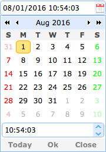

DateTimeBox
Extend from $.fn.datebox.defaults, Override defaults with $.fn.datetimebox.defaults.
Similar to the datebox, the datetimebox allows the user to select a date and a time to display the date and time with specified format. It adds a timespinner component to the drop-down panel.
Dependencies
- datebox
- timespinner
Usage Example
Create datetimebox from markup.
Create datetimebox using javascript.
Properties
The properties extend from datebox, below is the added properties for datetimebox:
| Name | Type | Description | Default |
|---|---|---|---|
| currentText | string | The text to display for the current day button. | Today |
| closeText | string | The text to display for the close button. | Close |
| okText | string | The text to display for the ok button. | Ok |
| spinnerWidth | number | The width of the timespinner component that embed in the datetimebox. Available since version 1.4. | 100% |
| showSeconds | boolean | Defines if to display the second information. | true |
| timeSeparator | string | The time separator between hour and minute and second. Available since version 1.3. | : |
Methods
The methods extend from datebox, below is the overridden methods for datetimebox.
| Name | Parameter | Description |
|---|---|---|
| options | none | Return the options object. |
| spinner | none | Return the timespinner object. |
| setValue | value |
Set the datetimebox value.
Code example:
$('#dt').datetimebox('setValue', '6/1/2012 12:30:56'); // set datetimebox value
var v = $('#dt').datetimebox('getValue'); // get datetimebox value
alert(v);
|
| cloneFrom | from |
Clone the datetimebox from a source datetimebox. Available since version 1.4.1.
Code example:
<input id="from" class="easyui-datetimebox">
// Clone the datetimebox components from an existing datetimebox
$('.dt').datetimebox('cloneFrom', '#from');
|